Wild plants you can forage in Norway
79 wild greens, berries, nuts, roots and flowers, with when each is in season, where it grows, how to harvest it and what to cook.
Greens
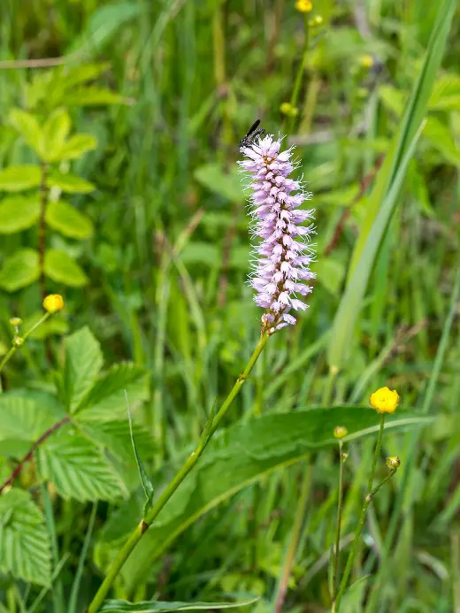
BistortMay–Jun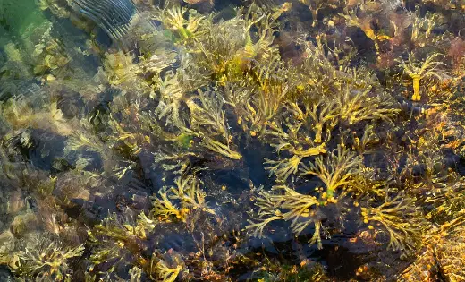
BladderwrackApr–Sep ChickweedMay–Sep
ChickweedMay–Sep CleaversApr–Jun
CleaversApr–Jun Common sorrelMay–Aug
Common sorrelMay–Aug DandelionApr–Sep
DandelionApr–Sep DulseApr–Sep
DulseApr–Sep Garden angelicaJun–Jul
Garden angelicaJun–Jul Ground elderMay–Jul
Ground elderMay–Jul Iceland mossJun–Sep
Iceland mossJun–Sep Lamb's lettuceJan–Dec
Lamb's lettuceJan–Dec Mountain sorrelJun–Aug
Mountain sorrelJun–Aug OracheJun–Sep
OracheJun–Sep Rosebay willowherbMay–Aug
Rosebay willowherbMay–Aug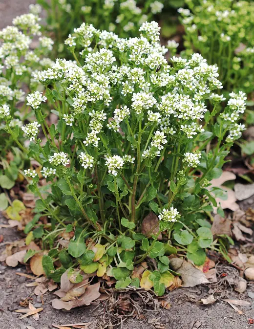
Scurvy grassMay–Jul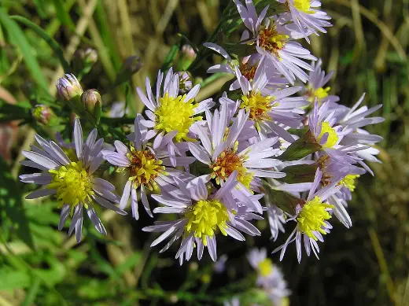
Sea asterMay–Aug Sea beetMay–Sep
Sea beetMay–Sep Sea lettuceMay–Sep
Sea lettuceMay–Sep Sea plantainMay–Aug
Sea plantainMay–Aug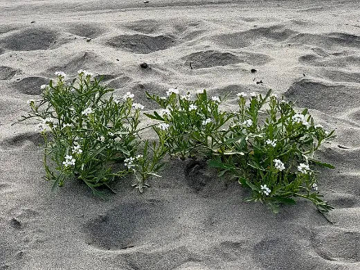
Sea rocketJun–Aug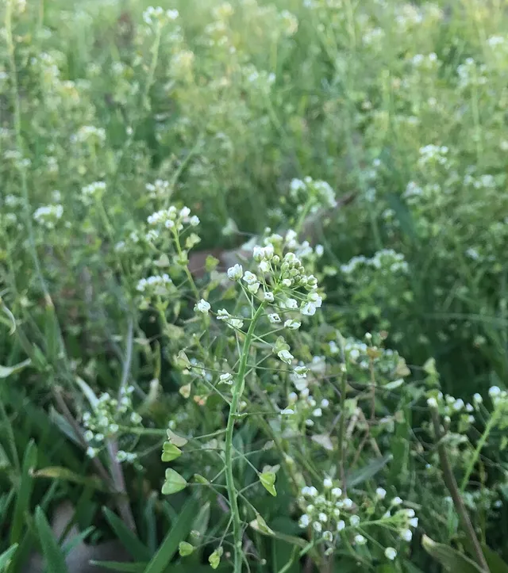
Shepherd's purseApr–Sep Spruce tipsMay–Jun
Spruce tipsMay–Jun Stinging nettleApr–Jul
Stinging nettleApr–Jul Sugar kelpMar–Jun
Sugar kelpMar–Jun Sweet cicelyMay–Jul
Sweet cicelyMay–Jul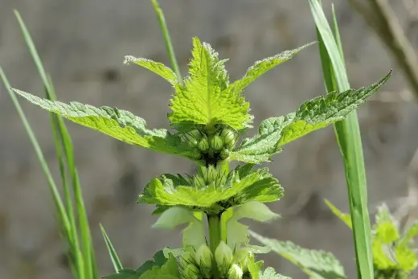
White and red deadnettleMay–Aug Wild chivesJun–Aug
Wild chivesJun–Aug Wild garlicApr–Jun
Wild garlicApr–Jun Wood sorrelMay–Sep
Wood sorrelMay–Sep
Fruit & berries
 Arctic brambleJul–Aug
Arctic brambleJul–Aug Beach roseAug–Sep
Beach roseAug–Sep BilberryJul–Sep
BilberryJul–Sep Bird cherryAug
Bird cherryAug Bog cranberrySep–Oct
Bog cranberrySep–Oct CloudberryJul–Aug
CloudberryJul–Aug CrowberryAug–Sep
CrowberryAug–Sep ElderberryAug–Sep
ElderberryAug–Sep Juniper berriesSep–Nov
Juniper berriesSep–Nov LingonberryAug–Oct
LingonberryAug–Oct Rose hipsAug–Oct
Rose hipsAug–Oct Rowan berriesAug–Oct
Rowan berriesAug–Oct Sea buckthornAug–Oct
Sea buckthornAug–Oct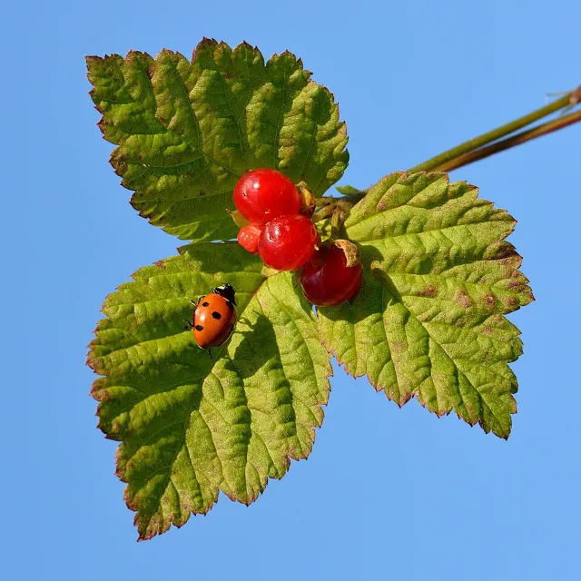
Stone brambleJul–Aug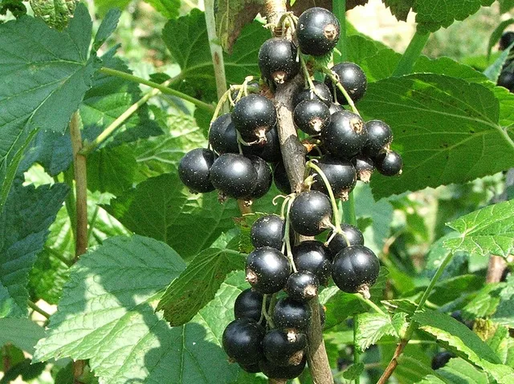
Wild blackcurrantJul–Aug Wild cherryJul
Wild cherryJul Wild gooseberryJul–Aug
Wild gooseberryJul–Aug Wild raspberryJul–Aug
Wild raspberryJul–Aug Wild strawberryJun–Aug
Wild strawberryJun–Aug
Roots & shoots
 SilverweedSep–Nov
SilverweedSep–NovSap & starch
 Birch sapApr–May
Birch sapApr–MayProtein
 Blue musselsJan–Dec
Blue musselsJan–Dec OystersSep–Apr
OystersSep–Apr PeriwinklesJan–Dec
PeriwinklesJan–DecNuts
 HazelnutAug–Sep
HazelnutAug–SepFlowers & teas
 Bog myrtleJun–Aug
Bog myrtleJun–Aug ElderflowerJun–Jul
ElderflowerJun–Jul Heather flowersJul–Sep
Heather flowersJul–Sep MeadowsweetJul–Aug
MeadowsweetJul–Aug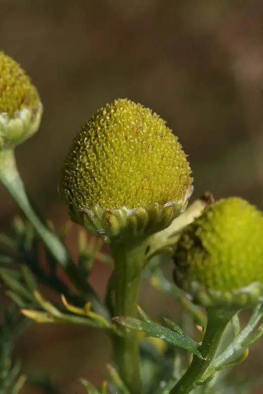
Pineapple weedJun–Sep Red cloverJun–Aug
Red cloverJun–Aug Sweet woodruffMay–Jun
Sweet woodruffMay–Jun Water mintJun–Aug
Water mintJun–Aug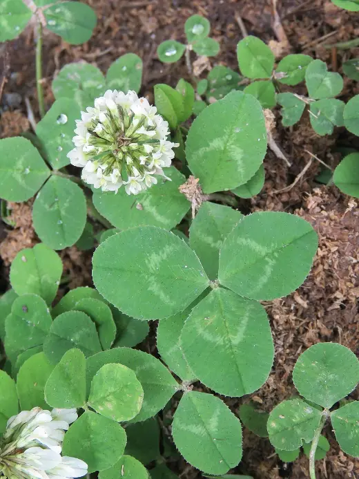
White cloverJun–Aug Wild marjoramJul–Aug
Wild marjoramJul–Aug Wild thymeJun–Aug
Wild thymeJun–Aug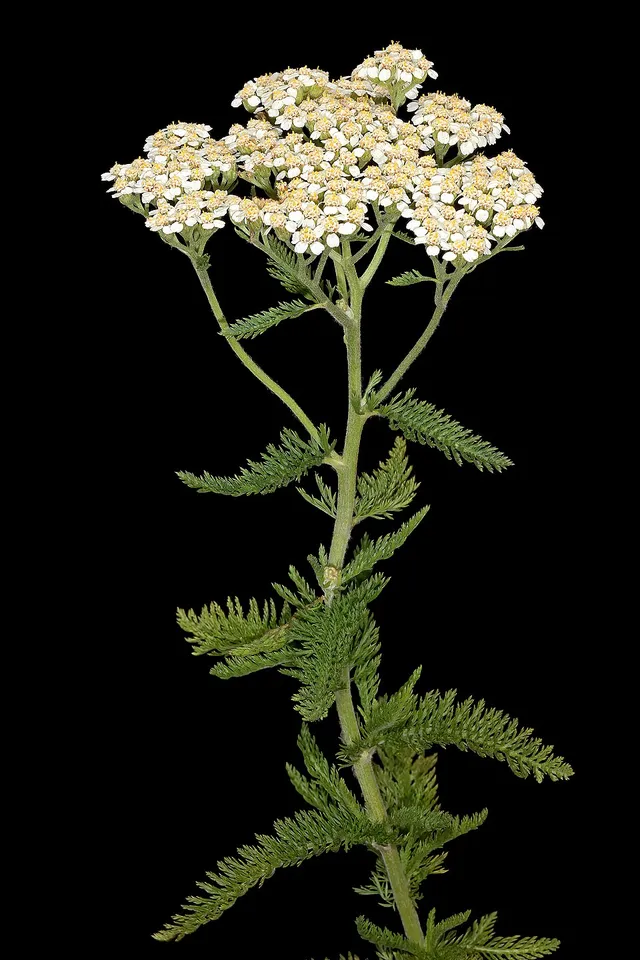
YarrowJun–Sep
 ChagaAll year
ChagaAll year ChanterelleJul–Sep
ChanterelleJul–Sep Chicken of the woodsJun–Aug
Chicken of the woodsJun–Aug Giant puffballJul–Sep
Giant puffballJul–Sep MorelMay–Jun
MorelMay–Jun PorciniJul–Sep
PorciniJul–Sep Saffron milk capAug–Oct
Saffron milk capAug–Oct Shaggy inkcapAug–Oct
Shaggy inkcapAug–Oct Wood blewitSep–Nov
Wood blewitSep–Nov